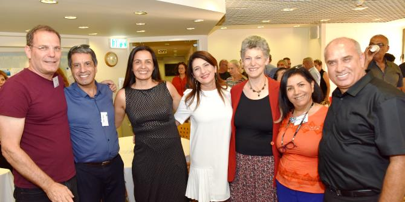

גרניט אלמוג-ברקת, בוגרת מחזור י"ד של בית ספר מנדל למנהיגות חינוכית, הצטרפה ליחידת הבוגרים עם סיום לימודיה בבית הספר והייתה שותפה לצוות ההקמה של היחידה ולפיתוח המודל הייחודי שלה. הנחת היסוד שעליה מבוססת פעילות היחידה היא שתהליך צמיחתו והצמחתו של מנהיג אינו נפסק לעולם, וכי מנהיגות של ממש אינה תלויה רק בפיתוח יכולות, אלא גם בשימורן ובהעמקתן, ובהימצאות הבוגרים בדיאלוג מתמיד וביקורתי עם המציאות. גרניט שקדה על פיתוח תוכניות ייחודיות המותאמות לצרכיהם המקצועיים המגוונים והמשתנים של הבוגרים, תוך התמקדות בזהות מקצועית ובפיתוח ובגיבוש של חזון. מחקריה של גרניט, אודות ממדים של מנהיגות וניהול מזוויות ייחודיות, פורסמו והוצגו בכתבי עת ובכנסים מרכזיים.
באירוע הפרידה לכבודה השתתפו עשרות בוגרים, בכירי הקרן ועובדיה, בני משפחתה ושותפים לעשייתה המקצועית. משה ויגדור, מנכ"ל קרן מנדל-ישראל, הודה לגרניט על פועלה הרב ועל תרומתה לפעילות הקרן ולפיתוח המקצועי של בוגריה. דני בר גיורא, מנהל בית ספר למנהיגות חינוכית ובוגר מחזור ד', שיתף בהיכרותו רבת השנים עם גרניט.
באירוע נשאו דברים גם בוגרים נוספים: פרופ' ליה לאור, בוגרת מחזור ב' ודיקנית הפקולטה לחינוך במכללת לוינסקי; מרדכי כהן, בוגר מחזור ח' ומנכ"ל משרד הפנים; קארן טל, בוגרת מחזור י"א, מייסדת ומנכ"לית תובנות בחינוך; איתן מורן, בוגר מחזור ט"ו ומנכ"ל האגודה לקידום החינוך, וזהבה שמש, בוגרת מחזור ד' ומנהלת אגף תכנון ופיתוח במשרד החינוך.
גרניט נעלה את נאומי הערב והודתה לבוגרים: "אני מודה לכם שבחרתם לממש יום יום את החוזה המוסרי שלקחנו על עצמנו, הגם שחלפו כבר אי אלו שנים... ועל שעדיין העזתם בכל יום לחלום, להגשים ולראות בי ובנו שותפים לדרך – שותפות שאף פעם אינה מובנת מאליה".

{kind=link}